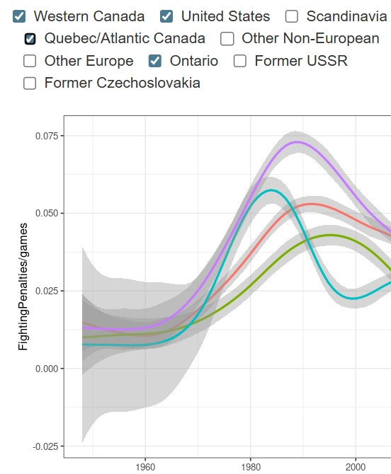

Seven decades of on-ice altercations mapped as a social network. What looks like chaos turns out to have a surprisingly coherent structure — with implications for how communities enforce norms without formal rules.
How do players build careers around fighting in a sport that's slowly eliminating it? Tracing the enforcer role across 15 years of NHL data to understand how deviant specializations achieve legitimacy.
GitHub →Seven decades of NHL fights mapped as a social network. What emerges is a surprisingly structured system of informal enforcement — with implications for how communities regulate themselves without formal rules.
GitHub →How do careers built around stigmatized activities acquire social structure and legitimacy over time? The dissertation that launched the hockey networks work.

Explore seven decades of fighting data — network visualizations, player profiles, team trends, and era-by-era breakdowns. Built in R Shiny.